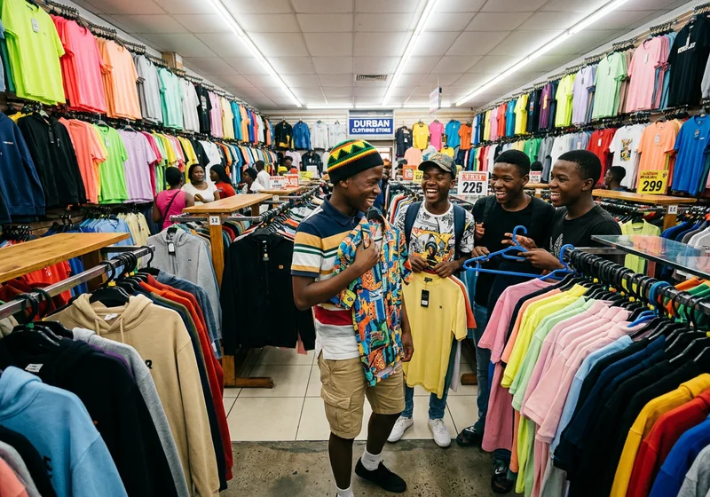
May 2026 · Eid Clothing
When children choose, the help works better
46 boys went to the store and picked their own clothes. Several said it was the first time they had ever been allowed to choose.
Read more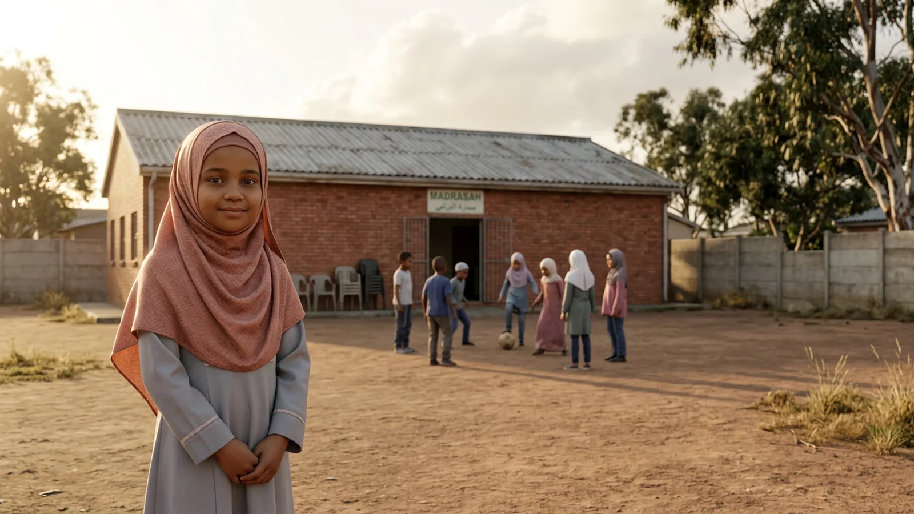
Safe, Well, Educated
We work inside the communities of Durban — Chatsworth, Welbedacht, Emona, Tongaat and Fairbreeze — with children who are too often counted and rarely asked. Food, clothing, learning: delivered so that children choose, take part, and feel seen.
Inclusive education, remedial learning and early childhood development — so that children who fell behind are not written off.
What this looks likeSafe spaces, mental health and psychosocial support, case management, child safeguarding and emergency response.
What this looks likeChild rights monitoring, awareness raising, capacity building and community-led initiatives that keep protection local.
What this looks like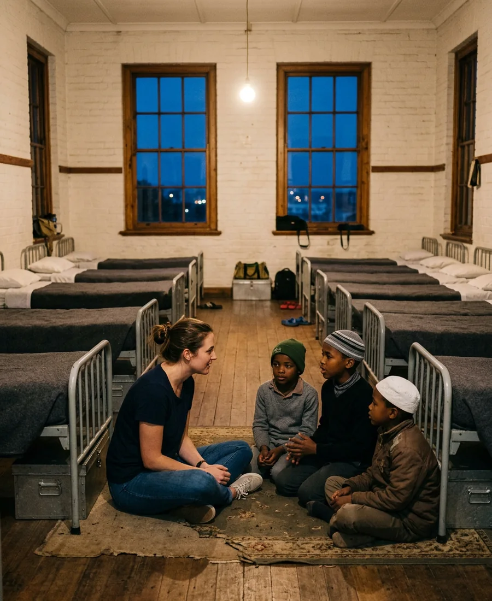
Who we are
We are dedicated to ensuring children are safe, well, and educated in
communities that uphold their best interests. Guided by humanitarian
principles — and grounded in justice, neutrality and independence — we
respond directly to children's needs, partnering with families, schools and
communities to protect children and amplify their voices.
That is not a statement we write from a distance. During Ramadan our team
stayed inside the academy for the month, sharing the children's routine and
letting what they said shape every decision that followed.
46 boys picked their own Eid clothing in-store, within an agreed budget.
Every stage — from livestock selection to the last home delivery — run by our own team.
Principles that guide us
They guide our decisions, shape our programmes, and define our relationships with children, families, communities and partners.
We maintain full operational independence so that our work is free from political, military or economic influence. We engage directly with communities, creating safe civic spaces where children's needs come before any external agenda.
We stand against all human rights violations. We advocate for accountability and justice for children and families who have suffered abuse, exploitation or neglect — regardless of their political, religious or ethnic background.
We believe in the power of local communities. By listening to and working with them, we build solutions that reflect their realities, and we empower families and local actors to lead the way in protecting their children.
We commit to complete honesty and transparency. Whether reporting on our activities or communicating with partners and families, we ensure information is accurate and never hidden or distorted.
Driven by compassion, we focus our efforts on those who suffer most. Our work is rooted in the simple belief that every child deserves dignity, safety and the chance to thrive.
We do not take sides in political or military conflicts. Our only allegiance is to the well-being of children, and we deliver support without bias or favour.
We respond solely to need. Our programmes are inclusive, non-discriminatory, and designed so that every child — whatever their background — receives the care and protection they deserve.
Measured, not estimated
Every figure here comes from our own records and published programme reports.
0
Through protection, education and psychosocial services.
0
Specialists in protection, education, case management and mental health.
0
Across multiple regions and settings, in every stage of delivery.
0
Partner schools applying safeguarding standards in daily practice.
0
Local committees that keep protection decisions in community hands.
0
Across five communities, 2,280 of them children.
0
Iftar, suhoor and redistributed meals over a single Ramadan month.
0
Against a target of 35 — each child picked their own outfit.
Open appeals
Each appeal funds a defined piece of work, with a published budget behind it.
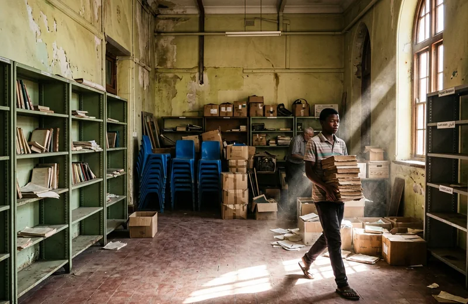
Turning a library used as a storage room into a reading and digital hub for 35 children: PCs, books, coding, robotics and a full-time lab officer.
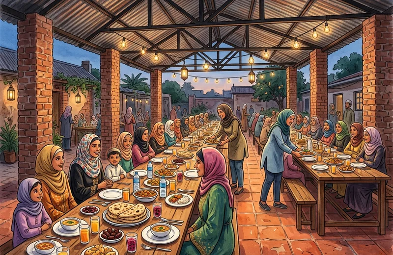
Daily iftar for 100 guests and suhoor for 50 resident students through the month, with surplus redistributed to families in Welbedacht.
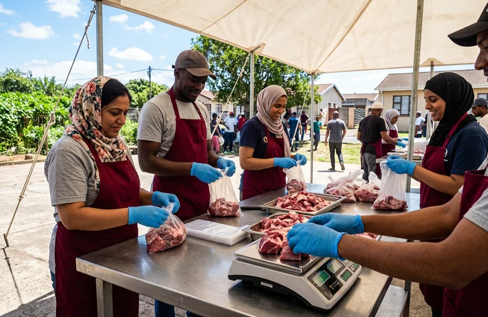
Sheep sourced from local Tongaat farms, slaughtered and portioned by our volunteers, delivered to homes that cannot reach a collection point.
Programme calendar
Not famous, but essential
Behind every safe child is a network of dedicated professionals, volunteers and advocates working in the most difficult conditions.

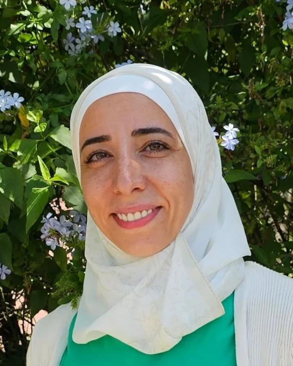
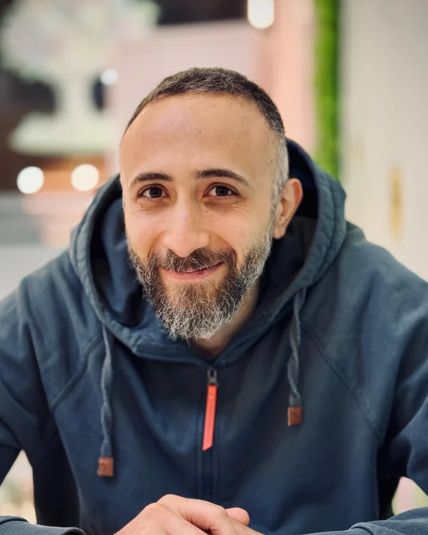
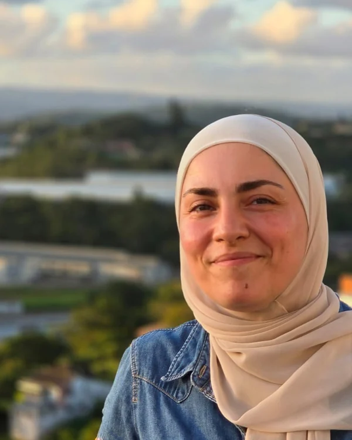


Working with
Together with our trusted partners we strengthen child protection, education and community resilience — amplifying our impact for every child we serve.
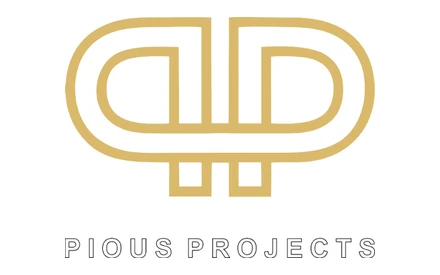
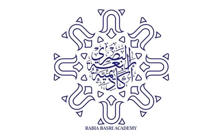
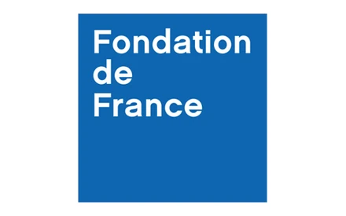
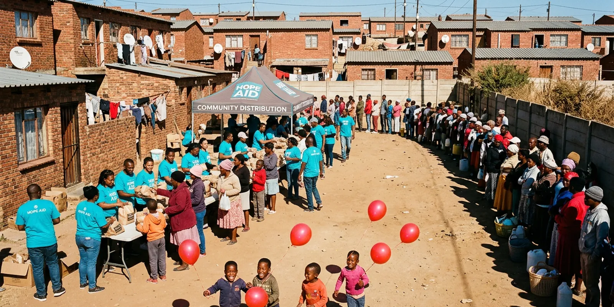
From the field
"Usually my mom brings things home for Eid. This time, I'm the one bringing Eid home." — Zinhle, Tongaat
Reports & stories
We publish the difficulties alongside the results. Full programme reports are available on request.

May 2026 · Eid Clothing
46 boys went to the store and picked their own clothes. Several said it was the first time they had ever been allowed to choose.
Read more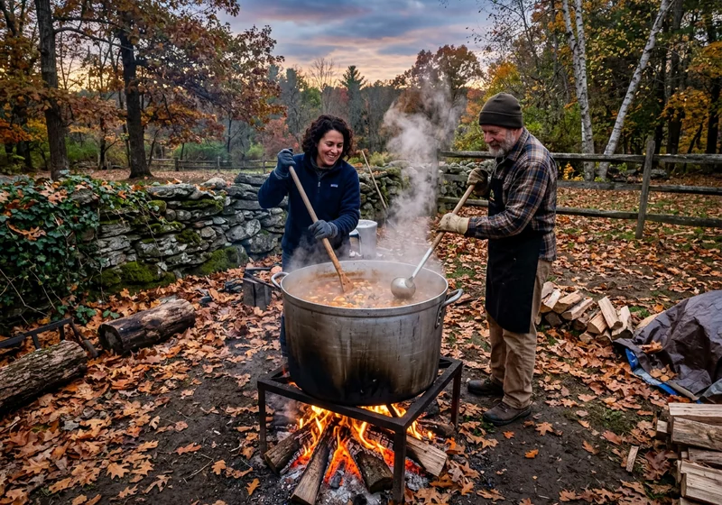
Mar 2026 · Ramadan
A month spent living inside the academy showed us that most of what children needed was never about the menu.
Read more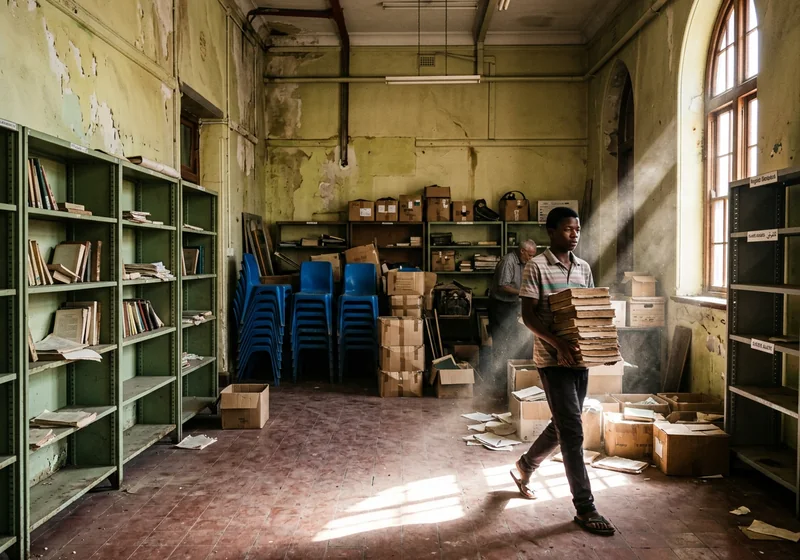
Feb 2026 · Al-Khwarizmi Hub
35 children with no structured access to books, screens or the internet — and one empty room waiting to be opened again.
Read more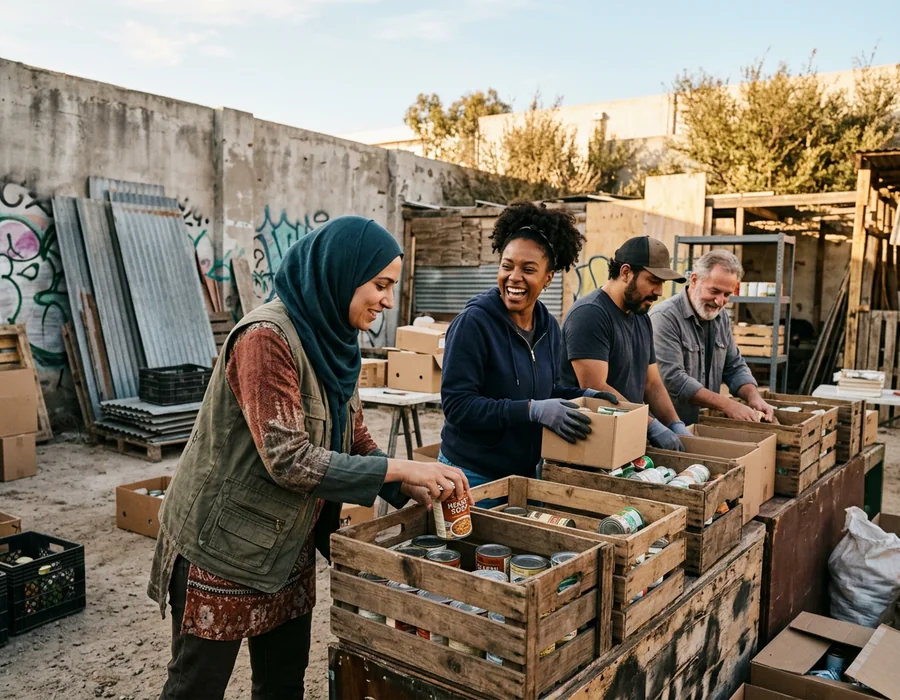
Get involved
Volunteers are at the core of our success. Their contributions shape our programmes, expand our reach and strengthen our connection to the communities we serve.
We don't want followers — we need leaders. Bring fresh ideas, ask hard questions, speak up. Our volunteers verify beneficiaries, portion and pack, run activities with children, and drive the final deliveries to families who cannot travel. No previous experience needed; reliability and the highest ethical standards around children are what matter.
Contact
Partnership enquiries, programme reports, or a community that needs support — write to us and we will answer.
Before you ask
If what you need is not here, write to us and a person will answer.
We are dedicated to protecting vulnerable children and giving them access to quality education. Our mission is that every child has the opportunity to learn, grow and thrive in a safe environment.
Remedial and inclusive education, early childhood development, mental health and psychosocial support, case management for vulnerable children, emergency response, safe spaces, child safeguarding, community-based protection, and awareness and advocacy programmes.
Children may receive various forms of support — one-to-one education, psychological care, or emergency assistance — depending on their individual needs and the services available in their area.
We apply strict child protection policies, including background checks for staff, safeguarding training and secure facilities. Your support helps us uphold these standards of care.
We provide immediate relief through a coordinated response team of psychosocial facilitators, case management workers, mental health specialists and safety officers, trained to handle crisis situations with care and urgency.
Directly to children and families in need, through the programmes running on the ground. Every appeal on this site publishes the budget behind it.
Yes. You can support a specific appeal — the learning hub, the Ramadan table, Qurbani — or give generally and we will direct it to where it is most urgently needed.
Within 48 hours your gift begins supporting children through our ongoing programmes, whether that is meals, educational support or protection.
Yes. Our donation process uses SSL encryption, and payment is handled through secure, PCI-compliant payment gateways.
Yes. Choose the monthly option when you donate. Regular giving lets us plan long-term work rather than respond season by season.
We publish programme reports with figures, stories and the challenges we met. Our programmes follow international standards, and we measure impact on the ground.
Write to us through the contact form with your background, interests and availability. Our team will come back to you to discuss the roles that match your skills.
Not necessarily. Some roles benefit from relevant experience, but we welcome committed people from all backgrounds. Tell us your interests and what time you have.
We don't want followers — we need leaders. Be proactive, bring fresh ideas, ask hard questions and speak up. We also expect reliability, a collaborative spirit, and the highest ethical standards when working with children and families.
We stay flexible. Some roles need short-term support around a distribution, others are ongoing. Tell us what works for you.
Volunteer. Sponsor. Partner.
Explore the different ways you can take part in our mission to ensure every child is safe, well and educated.
Pick a project and see exactly what your gift buys.
Distribution days, verification, activities with children.
ApplyOrganisations and schools that want to work together.
Contact usWhere it is needed most